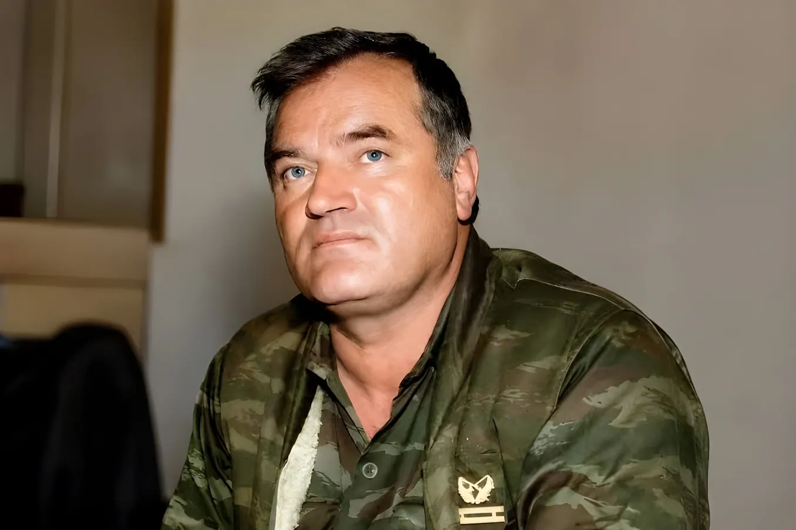

L'ancien commandant en chef de l'armée des Serbes de Bosnie, condamné à la perpétuité pour génocide, crimes contre l'humanité et crimes de guerre, est mort le 27 août 2026 à l'âge de 84 ans, à l'hôpital de La Haye où il purgeait sa peine. Sa disparition, quelques jours après le rejet d'une ultime demande de transfert vers un hôpital serbe, referme le dossier judiciaire du dernier grand accusé encore en vie de la guerre de Bosnie, sans mettre fin aux divisions mémorielles qui traversent toujours les Balkans.
Né le 12 mars 1942 à Božanovići, en Bosnie-Herzégovine, orphelin d'un père tué par les oustachis croates durant la Seconde Guerre mondiale, Ratko Mladić entre dès l'âge de 15 ans dans le système militaire yougoslave. Colonel à Knin en Croatie au moment de l'éclatement de la Yougoslavie, il prend en 1992 le commandement de l'armée de la République serbe de Bosnie (VRS) pendant la guerre qui oppose de 1992 à 1995 Serbes, Croates et Bosniaques, un conflit qui fera environ 100 000 morts et 2,2 millions de déplacés.
Mis en accusation dès 1995 par le Tribunal pénal international pour l'ex-Yougoslavie (TPIY) pour génocide, crimes contre l'humanité et crimes de guerre, Mladić échappe à la justice internationale pendant seize ans, vivant caché en Serbie sous une fausse identité. Il est finalement arrêté le 26 mai 2011 dans une ferme du village de Lazarevo, au nord du pays, mettant fin à la plus longue traque de l'histoire du tribunal, avant son transfert à La Haye pour y être jugé.
Le procès de Ratko Mladić s'ouvre le 16 mai 2012 à La Haye, où il doit répondre de onze chefs d'accusation, dont deux de génocide, portant à la fois sur le massacre de Srebrenica et sur le siège de Sarajevo, qui a duré près de quarante-quatre mois et coûté la vie à environ 10 000 civils sous les tirs de snipers et l'artillerie serbe. Le 22 novembre 2017, le TPIY le déclare coupable de génocide, de crimes contre l'humanité et de crimes de guerre, et le condamne à la prison à perpétuité.
« L'appel est rejeté dans son intégralité et la peine à perpétuité est confirmée. »
— Juge Prisca Matimba Nyambe, verdict d'appel, 8 juin 2021Depuis plusieurs années, l'état de santé de Ratko Mladić s'était nettement dégradé : plusieurs accidents vasculaires cérébraux et hospitalisations avaient déjà émaillé son procès, avant une prise en charge devenue critique ces derniers mois. Sa famille et le gouvernement serbe avaient demandé à plusieurs reprises son transfert vers un hôpital militaire de Belgrade pour y être soigné, des requêtes systématiquement rejetées par le Mécanisme international appelé à exercer les fonctions résiduelles des tribunaux pénaux (MICT), qui a confirmé son ultime refus quelques jours seulement avant sa mort. Son fils Darko Mladić avait dénoncé l'arrêt des soins à son égard, évoquant une mort qu'il jugeait organisée.
La nouvelle a suscité des réactions radicalement opposées de part et d'autre de la frontière communautaire. À Sarajevo, l'association des Mères de Srebrenica a rappelé que le nom de Mladić resterait à jamais associé au génocide, tandis que le secrétaire général de l'ONU Antonio Guterres a exprimé sa solidarité envers les victimes et condamné toute négation du génocide de Srebrenica. En Republika Srpska, l'entité serbe de Bosnie, plusieurs responsables politiques, dont Milorad Dodik, ont au contraire qualifié sa mort d'assassinat, estimant que son état de santé aurait dû justifier des soins plus tôt ; une partie de la presse serbe a repris cette lecture, allant jusqu'à évoquer une mort organisée par le tribunal.
Guerre de Bosnie ; Ratko Mladić commande l'armée de la République serbe de Bosnie (VRS).
Massacre de Srebrenica : environ 8 000 hommes et adolescents bosniaques sont exécutés par les forces sous son commandement.
Arrestation en Serbie après seize ans de cavale ; transfert au TPIY à La Haye.
Condamnation à la perpétuité pour génocide, crimes contre l'humanité et crimes de guerre.
La peine à perpétuité est confirmée en appel par le MICT.
Mort à l'hôpital de La Haye, à 84 ans, quelques jours après le rejet d'une nouvelle demande de transfert vers Belgrade.
Avec Mladić s'éteint le dernier des grands accusés encore vivants de la guerre de Bosnie, après la mort en détention de Slobodan Milošević en 2006 et la condamnation définitive de Radovan Karadžić en 2019. Sur le plan judiciaire, son décès ne modifie rien à un verdict déjà définitif : il meurt reconnu coupable, sans qu'aucun appel ne puisse plus rouvrir le dossier.
Mais l'écart entre les réactions à Sarajevo et à Banja Luka montre qu'un jugement international, aussi solidement établi soit-il en droit, ne suffit pas à imposer un récit commun. Trois décennies après Srebrenica, la reconnaissance du génocide continue de se heurter, dans une partie de la Serbie et de la Republika Srpska, à un déni persistant — un contentieux mémoriel que la mort du principal condamné ne referme pas, et qui continuera de peser sur la réconciliation dans les Balkans.